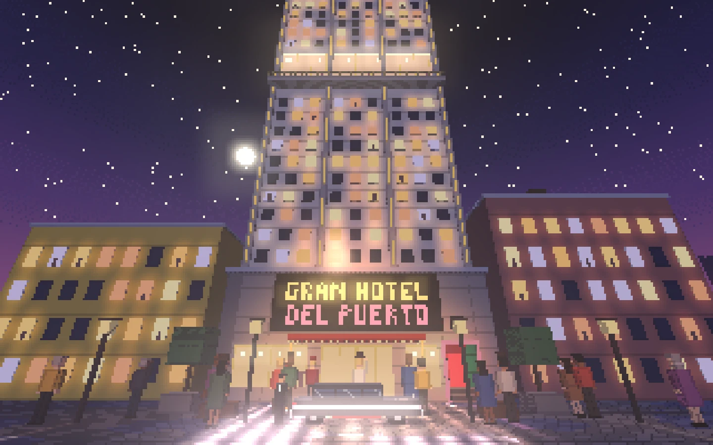
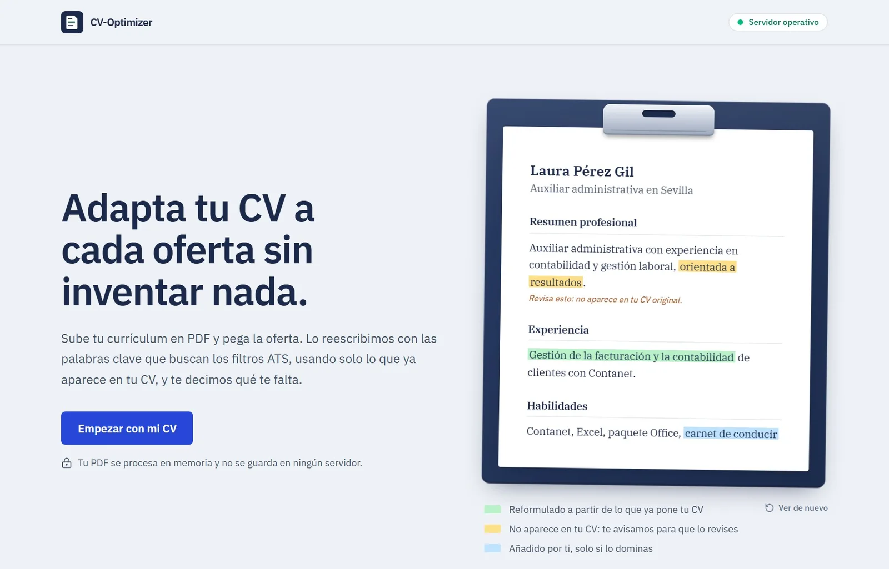

Portfolio · 2026
Francisco
Muñoz Dorado
Implementación de IA y automatización,
pensada para la gente que la usa.
pensada para la gente que la usa.
Detecto el trabajo manual que le quita tiempo a un equipo y lo convierto en herramientas que se usan de verdad: flujos automatizados, asistentes con IA y aplicaciones propias en producción.
tel+34 611 148 162
mailfrandorado8gg@gmail.com
inlinkedin.com/in/franciscomunozdorado
ghgithub.com/francisykza
Málaga· carnet B y coche
✦ Has encontrado lo que había detrás ✦
¡Me has pillado!
Apartar lo que estorba hasta ver qué hay debajo es justo lo que hago con los procesos de un equipo.



4 proyectos reales ↓aparta las fotos: hay algo debajo
baja